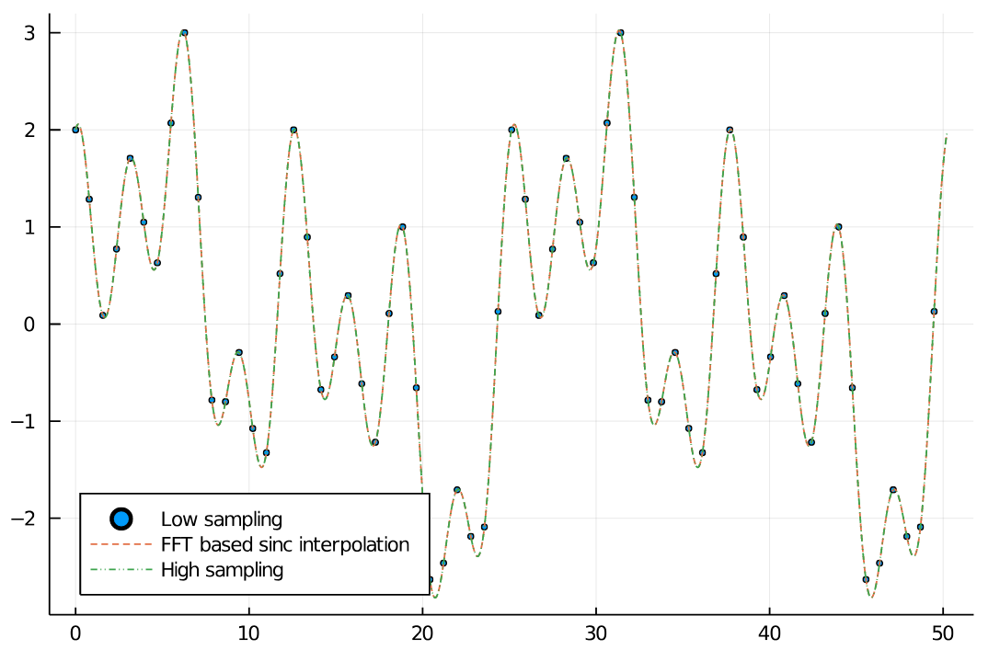

Resampling
To sinc interpolate a signal, it is possible to zero pad a signal in Fourier space and to do an inverse Fourier transform effectively evaluating the Fourier series at more samples. If the signal was initially band-limited, sinc interpolation leads to smoother, perfectly interpolated signals
Sinc interpolation
Below you can find a simple example for up sampling using resample. Furthermore, there is an image interpolation Pluto.jl notebook in the examples folder. We can see that the interpolated signal matches the higher sampled signal well.
begin
N_low = 128
x_min = 0.0
x_max = 16π
xs_low = range(x_min, x_max, length=N_low+1)[1:N_low]
xs_high = range(x_min, x_max, length=5000)[1:end-1]
f(x) = sin(0.5*x) + cos(x) + cos(2 * x) + sin(0.25*x)
arr_low = f.(xs_low)
arr_high = f.(xs_high)
end
begin
N = 1000
xs_interp = range(x_min, x_max, length=N+1)[1:N]
arr_interp = resample(arr_low, N)
end
begin
scatter(xs_low, arr_low, legend=:bottomleft, markersize=2, label="Low sampling")
plot!(xs_interp, arr_interp, label="FFT based sinc interpolation", linestyle=:dash)
plot!(xs_high, arr_high, linestyle=:dashdotdot, label="High sampling")
end
Downsampling
32 samples in the downsampled signal should be sufficient for Nyquist sampling. And as we can see, the downsampled signal still matches the original one.
begin
N_ds = 32
xs_ds = range(x_min, x_max, length=N_ds+1)[1:N_ds]
arr_ds = resample(arr_high, N_ds)
end
begin
scatter(xs_low, arr_low, legend=:bottomleft, markersize=2, label="Low sampling")
plot!(xs_interp, arr_interp, label="FFT based sinc interpolation", linestyle=:dash)
plot!(xs_ds, arr_ds, label="resampled array", linestyle=:dot)
end
Image Upsampling
Having a Nyquist sampled image, it is possible to perform a sinc interpolation and creating visually much nicer images. However, the information content does not change between both images. The full Pluto notebook is here. The right image is the upsampled version of the left one.

Function References
FourierTools.resample — Functionresample(arr, new_size [, normalize=true])Calculates the sinc interpolation of an arr on a new array size new_size. It is a re-evaluation of the Fourier series at new grid points. new_size can be arbitrary. Each dimension is then independently either up or downsampled.
This method is based on FFTs and therefore implicitly assumes periodic boundaries and a finite frequency support.
normalize=true by default multiplies by an appropriate factor so that the array size is included in the scaling. This results in an array having roughly the same mean intensity.
Basic Principle
If size(new_size)[i] > size(arr)[i], we apply zero padding in Fourier space.
If size(new_size)[i] < size(arr)[i], we cut out a centered part of the Fourier spectrum.
We apply some tricks at the boundary to increase accuracy of highest frequencies.
For real arrays we use rfft based operations, for complex one we use fft based ones.
Examples
sinc interpolation of 2 datapoints result in an approximation of cosine.
julia> resample([2.0, 0.0], (6,))
6-element Vector{Float64}:
2.0
1.5
0.5
0.0
0.5
1.5
julia> resample([2.0, 0.0], (6,)) ≈ 1 .+ cos.(2π .* (0:5)./6)
trueFourierTools.upsample2 — Functionupsample2(mat::AbstractArray{T, N}; dims=1:N, fix_center=false, keep_singleton=false)Upsamples by a factor of two in all dimensions. The code is optimized for speed by using subpixelshifts rather than Fourier resizing. By default the first pixel maintains its position. However, this leads to a shift of the center (size[d]÷2+1) in the resulting array for uneven array sizes. fix_center=true can be used to remedy this and the result array center position will agree to the source array center position. keep_singleton=true will not upsample dimensions of size one. Note that upsample2 is based on Fourier-shifting and you may have to deal with wrap-around problems. ```jdoctest julia> upsample2(collect(collect(1.0:9.0)')) 2×18 Matrix{Float64}: 1.0 0.24123 2.0 3.24123 3.0 2.93582 4.0 5.0 5.0 5.0 6.0 7.06418 7.0 6.75877 8.0 9.75877 9.0 5.0 1.0 0.24123 2.0 3.24123 3.0 2.93582 4.0 5.0 5.0 5.0 6.0 7.06418 7.0 6.75877 8.0 9.75877 9.0 5.0
julia> upsample2(collect(collect(1.0:9.0)'); fixcenter=true, keepsingleton=true) 1×18 Matrix{Float64}: 5.0 1.0 0.24123 2.0 3.24123 3.0 2.93582 4.0 5.0 5.0 5.0 6.0 7.06418 7.0 6.75877 8.0 9.75877 9.0 ```